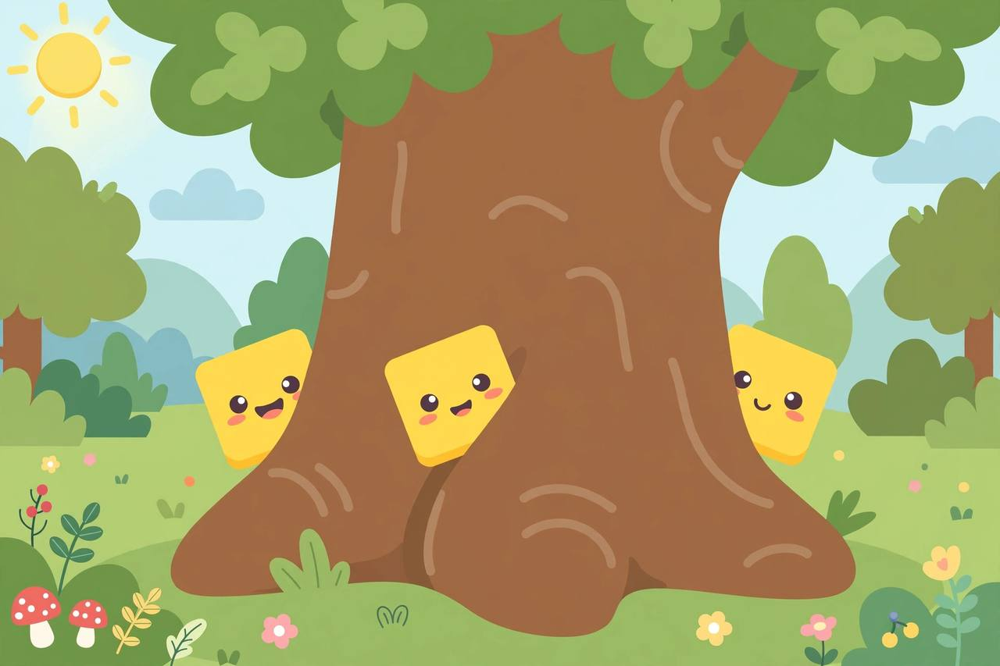
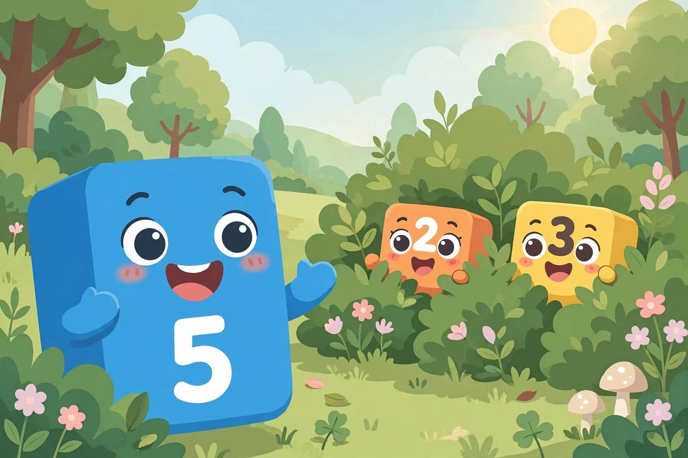

📖 剧情简介
大家玩捉迷藏！五号一眼认出藏起来的朋友：三加二就是五！
Hide and seek! Five spots her hidden friends at a glance: three and two make five!
🎭 角色
一号 One、二号 Two、三号 Three、五号 Five
（数字乐园，游戏时间 / Numberland, playtime）
5
Five五号
Let's play hide and seek! I'll count, you hide!
玩捉迷藏吧！我数数，你们藏！
（五号闭眼数数 / Five covers her eyes and counts）
5
Five五号
One, two, three, four, five! Ready or not, here I come!
一、二、三、四、五！藏好了吗？我来啦！
（五号四处找 / Five looks around）
5
Five五号
Hmm… I see three blocks behind the tree, and two behind the bush!
嗯……树后有三个方块，灌木后有两个！

I see three blocks behind the tree!
5
Five五号
Three and two make five! Found you!
三加二等于五！找到你们啦！

Three and two make five! Found you!
（三号和二号跑出来 / Three and Two run out）
3
Three三号
How did you see us so fast?
你怎么这么快就找到我们了？
5
Five五号
I know my parts! Three and two is five!
我认识我的组成部分！三加二就是五！
1
One一号
My turn to seek!
轮到我找了！
A
All大家
Hide and seek is the best!
捉迷藏最好玩！